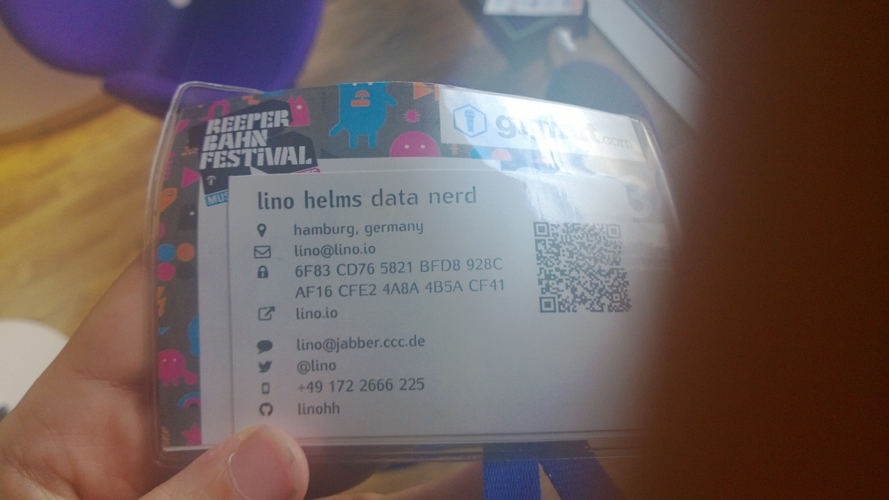
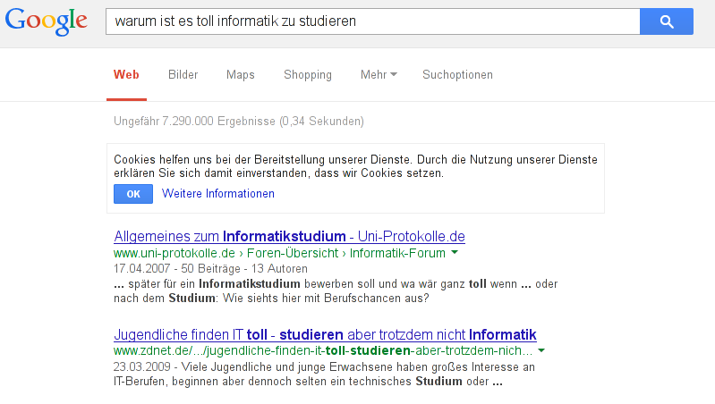
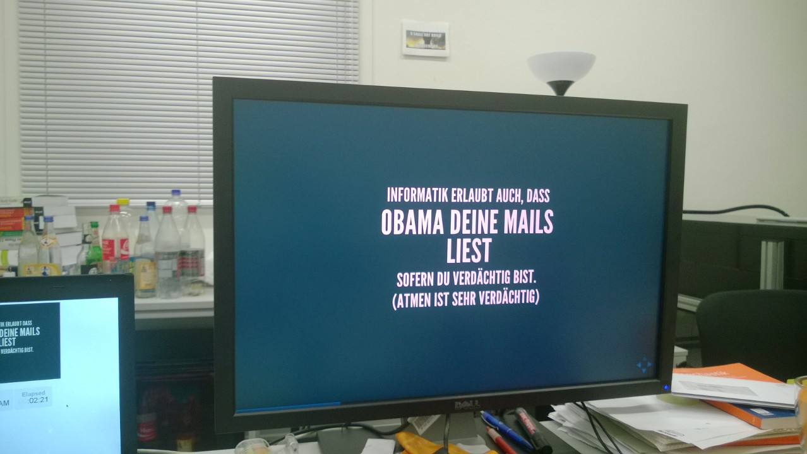

Guten Morgen!
Informatik aus Sicht der Student*innen
Beginn in
Moin!
Lino Helms (25)
Studiert Mensch-Computer-Interaktion
Glaubt manchmal Computer zu verstehen
Macht hier mit vielen tollen Leuten Student*innenvertretung

Auch mal unkonventionell
Beginnen wir mit
der
naheliegenden Frage
Warum ist es toll Informatik zu studieren?
Während wir noch über den Sinn der Frage nachdenken hat Google in der Zwischenzeit

7.290.000 Antworten
in 0,34 Sekunden
Informatik beschleunigt die Welt!
Informatik ist toll, weil
Lexika herausholen
heute überflüssig ist.
Informatik ist toll, weil
Computer deine Arbeit machen
auch wenn du schläfst
Informatik ist toll, weil
Gesellschaftswandel
durch moderne Technologie unterstützt wird
Informatik ist toll, weil eure
Kreativität
eure einzige Grenze ist.
Informatik erlaubt auch, dass
Obama deine Mails liest
sofern du verdächtig bist.
(Atmen ist sehr verdächtig)
Informatik revolutioniert
die Ganze Welt
und du kannst dabei sein
Was erwartet dich am
Fachbereich Informatik?
1856 Kommiliton*innen
über 23 verbundene Professor*innen
Viele hochqualifizierte Mitarbeiter*innen
Haufenweise Möglichkeiten dich einzubringen
Hohe Flexibilität des Fachbereichs
Einflussreiche Student*innenvertretung
Innovationsfreudiges Klima
Sehr gutes Verhältnis zwischen Studis und Mitarbeiter*innen
Gut ausgestattete Bibliothek
Studentische Arbeitsräume
24h Zugang*
Erlebnisgastronomie (Mensa)
Roboterfußballmannschaft
Studentische Zeitung
IT-Sicherheits-Team
Studentische Vortragsreihe (KBS)
Einblick in den
Studienalltag
BSc. Informatik
Module im ersten Semester
Softwareentwicklung 1 (VL+Ü)
Mathematik 1 (VL+VL+Ü)
Rechnerstrukturen (VL+VL+Ü)
Informatik im Kontext 1+2 (VL+VL)
Veranstaltungen finden in Stellingen und am Hauptcampus statt.
Standortwechsel geht Zeitlich meistens gut.
Schamlose Werbung:
Als Studi habt ihr ein HVV-Gesamtbereich-Ticket
SE 1
Java
Test-driven
Qualitätsorientiert
Ausgezeichnete Betreuung
Mathe 1
Diskrete Mathematik
Gute unterstützende Lehre
Angenehme Herausforderung
z.B. Vorkurse vor Studienbeginn
Rechnerstrukturen
Hardwarenahes Wissen
Praktikum zusätzlich zur Übung
Assembler!
Tutorien
IKON
Informatik und Gesellschaft
Grundlagen der MCI
Blick über den Tellerrand
Was braucht ihr?
Hochschulzugangsberechtigung nach HmbHG
Keine weiteren Kenntnisse erforderlich
Sie zu haben schadet dennoch nicht
Motivation!
Interesse!
Muss ich programmieren können?
Nein!
Keinerlei Vorkenntnisse erforderlich
Muss ich gut in Mathe sein?
Nein!*
* Ausnahme: Computing in Science
Muss ich Mathe verstehen können?
Ja!
Vorkurse besuchen!
Gibt es eine Anwesenheitspflicht?
Manchmal™
Wir wollen sie aber grundsätzlich abschaffen
Werden Vorlesungen aufgezeichnet?
Manchmal™
Viele aufgezeichnete Vorlesungen findest du auf http://lecture2go.uni-hamburg.de
Wie erfolgt die Benotung der Module?
Klausur, mündl. Prüfung, Hausarbeit, etc...
Wird das Studium einfach?
Nein.
Aber euer Einsatz lohnt sich!
Was das Studium erleichtert
Die
Fachschaft Informatik
Menge aller Student*innen
ohne die WiInfs
Die Fachschaft macht den FBI besonders.
Dank der Fachschaft seid ihr nie alleine.
Und wir bieten den Studis tolle Dinge

Beteiligungsmöglichkeiten
Bei uns ist jede*r Willkommen.
außer
Sexist*innen, Rassist*innen, Klassist*innen und sonstige Freund*innen der intoleranten Kackscheiße.
Wer damit ein Problem hat, möge zuhause bleiben.
Kommt nicht zu uns, studiert lieber Jura.
BSc. Informatik
Letzte*r angenommene*r Bewerber*in 2012/2013
2,9 / 2 Wartesemester
BSc. Software-System-Entwicklung
Letzte*r angenommene*r Bewerber*in 2012/2013
alle Bewerber*innen zugelassen
Weniger Wahlmöglichkeiten
bisher einfachere Zulassung
Strategische Bewerbung schwierig
BSc.Mensch-Computer-Interaktion
Letzte*r angenommene*r Bewerber*in 2012/2013
2,3 / 10 Wartesemester
Informatik + Psychologie
Humanisierung der Computernutzung
Hohe Nachfrage, hohe Zulassungsschranke
BSc. Computing in Science
Letzte*r angenommene*r Bewerber*in 2012/2013
alle Bewerber*innen zugelassen
Studiengang mit klarem Schwerpunkt
Naturwissenschaften
Knallharter Anspruch
Empfehlenswert für Menschen die
Mathematische Herausforderungen
suchen.
Wahlmöglichkeit zwischen
Chemie / Biochemie
Physik
Wirtschaftsinformatik
Bachelor of Science
Letzte*r angenommene*r Bewerber*in 2012/2013
2,9 / 4 Wartesemester
Informatik mit BWL-Anteil
Weniger Informatik im Pflichtbereich
Zugunsten von BWL, Recht, ...
Überzeugt?
So kommt ihr rein
Bewerbungsfrist
1. Juni 2014
bis
15. Juli 2014
Wichtig
An der Uni Hamburg dürft ihr euch für maximal ein Fach gleichzeitig bewerben.
Entscheidet euch rechtzeitig, berücksichtigt die bisherigen Zulassungsgrenzen
Ist die Abiturnote schlecht, gibt es u.U. Mittel und Wege die bei der Bewerbung berücksichtigte Note zu verbessern.
Noch habt ihr die Möglichkeit Einfluss auf eure Abschlussnote zu nehmen.
Nutzt die Zeit und lernt, bei der Bewerbung gibt es keine Sympathiepunkte. Fast nur die Note zählt.
Deshalb Wichtig:
Sprecht uns an Bewerbung mit Abischnitt > 2,5 (> 2,0 bei MCI)
Lieber vorher fragen als später weinen.
Wir begleiten euch gerne.
Noch kein Abi 2014?
Schon vor dem Abitur könnt ihr schulbegleitend als Juniorstudent*in Informatik studieren.
Fragerunde
lino@lino.io
@lino
fsr@informatik.uni-hamburg.de